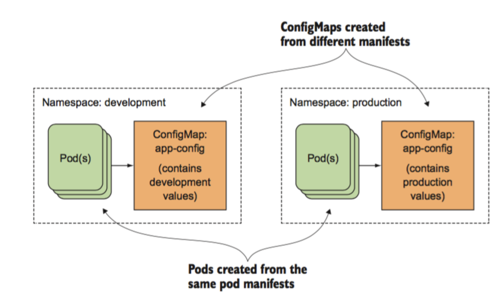

07-k8s配置文件管理
1.为什么要用configMap
ConfigMap是一种用于存储应用所需配置信息的资源类型，用于保存配置数据的键值对，可以用来保存单个属性，也可以用来保存配置文件。
通过ConfigMap可以方便的做到配置解耦，使得不同环境有不同的配置。
- 考虑真实的使用场景，像数据库这类中间件，是作为公共资源，为多个项目提供服务，不适合和业务容器绑定在同一个Pod中，因为业务容器是经常变更的，而数据库不需要频繁迭代
- yaml的环境变量中存在敏感信息（账号、密码），存在安全隐患
为什么要统一管理环境变量
- 环境变量中有很多敏感的信息，比如账号密码，直接暴漏在yaml文件中存在安全性问题
- 团队内部一般存在多个项目，这些项目直接存在配置相同环境变量的情况，因此可以统一维护管理
- 对于开发、测试、生产环境，由于配置均不同，每套环境部署的时候都要修改yaml，带来额外的开销
k8s提供两类资源，configMap和Secret，可以用来实现业务配置的统一管理， 允许将配置文件与镜像文件分离，以使容器化的应用程序具有可移植性 。
图解configmap创建

ConfigMap里配置文件存储形式
键值对
key: value
文件名: 配置文件的内容
支持的配置类型
1. 直接定义键值对
2. 基于文件创建的键值对
创建方式
1. 命令行
2. 声名式资源配置清单
configMap配置文件如何进入Pod
1. 先创建configMap，Pod再引用
2. ConfigMap属于ns下资源，同一个ns下的POD才可以引用
2.创建configMap
configMap，通常用来管理应用的配置文件或者环境变量
https://kubernetes.io/zh-cn/docs/tasks/configure-pod-container/configure-pod-configmap/
2.1命令行创建
kubectl create configmap --help
# --from-iteral 定义单个k=v
kubectl -n yuchaoit create configmap nginx-config --from-literal=nginx_port=80 --from-literal=server_name=www.yuchaoit.com
[root@k8s-master-10 /all-k8s-yml]#kubectl get cm -n yuchaoit -owide
NAME DATA AGE
nginx-config 2 11s
# 查看详细k-v
[root@k8s-master-10 /all-k8s-yml]#kubectl -n yuchaoit describe cm nginx-config
Name: nginx-config
Namespace: yuchaoit
Labels: <none>
Annotations: <none>
Data
====
nginx_port:
----
80
server_name:
----
www.yuchaoit.com
Events: <none>
2.2 pod引用cm资源
# 看帮助
[root@k8s-master-10 /all-k8s-yml]#kubectl explain pod.spec.containers.env.valueFrom.configMapKeyRef
pod在env字段里引入cm
apiVersion: v1
kind: Pod
metadata:
name: nginx-cm
namespace: yuchaoit
spec:
containers:
- image: nginx:alpine
name: container-0
ports:
- name: http
containerPort: 80
env:
- name: NGINX_PORT
valueFrom:
configMapKeyRef: # 引用ConfigMap
name: nginx-config
key: nginx_port
- name: SERVER_NAME
valueFrom:
configMapKeyRef:
name: nginx-config # 指明cm名
key: server_name # 获取cm的key，拿到value
创建
[root@k8s-master-10 /all-k8s-yml]#kubectl create -f nginx-cm-pod.yml
pod/nginx-cm created
[root@k8s-master-10 /all-k8s-yml]#kubectl -n yuchaoit get po
NAME READY STATUS RESTARTS AGE
mysql-deploy-98b786585-vpkvq 1/1 Running 0 19h
查看pod和cm的关系
查看pod内环境变量信息
[root@k8s-master-10 /all-k8s-yml]#kubectl -n yuchaoit exec nginx-cm -- env |grep -Ei 'nginx_port|server_name'
NGINX_PORT=80
SERVER_NAME=www.yuchaoit.com
NGINX_PORT_80_TCP_PORT=80
NGINX_PORT_80_TCP=tcp://10.1.11.104:80
NGINX_PORT_80_TCP_PROTO=tcp
NGINX_PORT_80_TCP_ADDR=10.1.11.104
注意
pod通过env引入的cm配置
若修改了configmap，pod不会生效
2.3 资源yaml创建configMap
[root@k8s-master-10 /all-k8s-yml]#kubectl -n yuchaoit get cm nginx-config -oyaml
# 快捷获取就行了
apiVersion: v1
data:
nginx_port: "80"
server_name: www.yuchaoit.com
kind: ConfigMap
metadata:
name: nginx-config
namespace: yuchaoit
2.4 通过Volume方式引用configMap
在Volume中引用ConfigMap，就是通过文件的方式直接将ConfigMap的每条数据填入Volume
每条数据是一个文件，键就是文件名，键值就是文件内容。
创建cm
cat > www.conf << 'EOF'
server {
listen 80;
server_name www.yuchaoit.cn;
location / {
root /www/;
index index.html;
}
}
EOF
# 创建cm资源，以文件读取配置
kubectl create -n yuchaoit configmap nginx-www --from-file=www.conf=./www.conf
# 查看cm
[root@k8s-master-10 /all-k8s-yml/class]#kubectl get cm nginx-www
NAME DATA AGE
nginx-www 1 9s
# cm描述信息
[root@k8s-master-10 /all-k8s-yml/class]#kubectl describe cm nginx-www
Name: nginx-www
Namespace: default
Labels: <none>
Annotations: <none>
Data
====
www.conf:
----
server {
listen 80;
server_name www.yuchaoit.cn;
location / {
root /www/;
index index.html;
}
}
Events: <none>
运行nginx-pod调用cm配置
apiVersion: v1
kind: Pod
metadata:
name: nginx-cm
namespace: yuchaoit
spec:
volumes:
- name: nginx-www
configMap:
name: nginx-www
items:
- key: www.conf
path: www.conf
containers:
- image: nginx:latest
name: nginx-pod-cm
ports:
- name: http
containerPort: 80
volumeMounts: # 挂载cm配置到nginx配置里即可
- mountPath: /etc/nginx/conf.d/ # 容器内挂载点
name: nginx-www # 源配置从cm获取
创建pod
[root@k8s-master-10 /all-k8s-yml/class]#kubectl create -f nginx-cm-pod.yml
[root@k8s-master-10 /all-k8s-yml/class]#kubectl get po -owide -n yuchaoit
NAME READY STATUS RESTARTS AGE IP NODE NOMINATED NODE READINESS GATES
nginx-cm 1/1 Running 0 2m59s 10.2.2.95 k8s-node-12 <none> <none>
查看pod调用的cm信息
Volumes:
nginx-www:
Type: ConfigMap (a volume populated by a ConfigMap)
Name: nginx-www
Optional: false
default-token-nkzpq:
Type: Secret (a volume populated by a Secret)
SecretName: default-token-nkzpq
Optional: false
QoS Class: BestEffort
Node-Selectors: <none>
Tolerations: node.kubernetes.io/not-ready:NoExecute op=Exists for 300s
node.kubernetes.io/unreachable:NoExecute op=Exists for 300s
Events:
Type Reason Age From Message
---- ------ ---- ---- -------
Normal Scheduled 3m26s default-scheduler Successfully assigned yuchaoit/nginx-cm to k8s-node-12
Normal Pulling 3m25s kubelet Pulling image "nginx:latest"
Normal Pulled 3m10s kubelet Successfully pulled image "nginx:latest" in 15.634341981s
Normal Created 3m10s kubelet Created container nginx-pod-cm
Normal Started 3m10s kubelet Started container nginx-pod-cm
[root@k8s-master-10 /all-k8s-yml/class]#kubectl -n yuchaoit describe po nginx-cm
# pod内信息
[root@k8s-master-10 /all-k8s-yml/class]#kubectl -n yuchaoit exec -it nginx-cm -- ls /etc/nginx/conf.d/
www.conf
pod调用cm字段解释
[root@k8s-master-10 /all-k8s-yml/class]#kubectl explain pod.spec.volumes.configMap.items
configMap参数解释
apiVersion: v1
kind: Pod
metadata:
name: nginx-cm
namespace: yuchaoit
spec:
volumes:
- name: nginx-www
configMap: # 引用cm配置
name: nginx-www # cm名
items: # 获取cm数据方式，key提取
- key: www.conf # 指定cm配置里的key
path: www.conf # key映射到文件的相对路径，生成的文件名
containers:
- image: nginx:latest
name: nginx-pod-cm
ports:
- name: http
containerPort: 80
volumeMounts: # 挂载cm配置到nginx配置里即可
- mountPath: /etc/nginx/conf.d/ # 容器内挂载点
name: nginx-www # 源配置从cm获取
2.5 动态修改cm配置
注意，使用env形式不支持热更新！
使用Volume方式引用支持热更新!
[root@k8s-master-10 /all-k8s-yml/class]#kubectl -n yuchaoit edit cm nginx-www
configmap/nginx-www edited
修改www.conf端口为82
[root@k8s-master-10 /all-k8s-yml/class]#kubectl -n yuchaoit exec -it nginx-cm -- cat /etc/nginx/conf.d/www.conf
server {
listen 82;
server_name www.yuchaoit.cn;
location / {
root /www/;
index index.html;
}
}
3.Secret
Secret是一种加密存储的资源对象，您可以将认证信息、证书、私钥等保存在Secret中，而不需要把这些敏感数据暴露到镜像或者Pod定义中，从而更加安全和灵活。
Secret与ConfigMap非常像，都是key-value键值对形式，使用方式也相同，不同的是Secret会加密存储，所以适用于存储敏感信息。
Base64编码
Secret与ConfigMap相同，是以键值对形式保存数据，所不同的是在创建时，Secret的Value必须使用Base64编码。
对字符串进行Base64编码，可以直接使用“echo -n 要编码的内容 | base64”命令即可，示例如下：
# 理解-n参数作用，不输出尾随换行符
[root@k8s-master-10 /all-k8s-yml/class]#echo 'yu' |wc -c
3
[root@k8s-master-10 /all-k8s-yml/class]#echo -n 'yu' |wc -c
2
[root@k8s-master-10 /all-k8s-yml/class]#echo -n 'www.yuchaoit.cn' |base64
d3d3Lnl1Y2hhb2l0LmNu
[root@k8s-master-10 /all-k8s-yml/class]#echo -n '3306' |base64
MzMwNg==
直接创建secret
apiVersion: v1
kind: Secret
metadata:
name: mysecret
data:
key1: aGVsbG8gd29ybGQ= # "hello world" Base64编码后的值
key2: MzMwNg== # "3306" Base64编码后的值
以文件创建Secret
如下示例中定义的Secret中包含两条Key-Value。
建议用如下方式
# 注意密码，别加任何引号
cat > secret_mysql.txt <<'EOF'
MYSQL_ROOT_PASSWORD=www.yuchaoit.cn
EOF
# 创建secret，注意参数
[root@k8s-master-10 /all-k8s-yml/class]#kubectl -n yuchaoit create secret generic mysql-sec --from-env-file=secret_mysql.txt
secret/mysql-sec created
# 查看secrets保存的键值对
[root@k8s-master-10 /all-k8s-yml/class]#kubectl -n yuchaoit get secrets mysql-sec -oyaml
apiVersion: v1
data:
MYSQL_ROOT_PASSWORD: d3d3Lnl1Y2hhb2l0LmNu
kind: Secret
metadata:
creationTimestamp: "2022-09-17T05:59:36Z"
managedFields:
- apiVersion: v1
fieldsType: FieldsV1
fieldsV1:
f:data:
.: {}
f:MYSQL_ROOT_PASSWORD: {}
f:type: {}
manager: kubectl-create
operation: Update
time: "2022-09-17T05:59:36Z"
name: mysql-sec
namespace: yuchaoit
resourceVersion: "2539757"
selfLink: /api/v1/namespaces/yuchaoit/secrets/mysql-sec
uid: e528d323-69ac-4f3f-b1f6-f72e3b7830d1
type: Opaque
pod调用secret，env形式
[root@k8s-master-10 /all-k8s-yml/class]#cat mysql-sec-pod.yml
apiVersion: v1
kind: Pod
metadata:
name: mysql-sec-pod
namespace: yuchaoit
spec:
containers:
- image: mysql:5.7
name: container-0
env:
- name: MYSQL_ROOT_PASSWORD
valueFrom:
secretKeyRef:
name: mysql-sec # 创建的secret资源名
key: MYSQL_ROOT_PASSWORD # secret里的key
[root@k8s-master-10 /all-k8s-yml/class]#
创建mysql，使用secret
[root@k8s-master-10 /all-k8s-yml/class]#kubectl create -f mysql-sec-pod.yml
[root@k8s-master-10 /all-k8s-yml/class]#kubectl -n yuchaoit get po -owide
NAME READY STATUS RESTARTS AGE IP NODE NOMINATED NODE READINESS GATES
mysql-sec-pod 1/1 Running 0 56s 10.2.2.98 k8s-node-12 <none> <none>
nginx-cm 1/1 Running 0 117m 10.2.2.95 k8s-node-12 <none> <none>
[root@k8s-master-10 /all-k8s-yml/class]#
[root@k8s-master-10 /all-k8s-yml/class]#curl 10.2.2.98:3306
5.7.36o9^Q#IÿÿLV
x!r1mysql_native_password!ÿ#08S01Got packets out of order[root@k8s-master-10 /all-k8s-yml/class]#
# 测试数据库账密正确
[root@k8s-master-10 /all-k8s-yml/class]#kubectl -n yuchaoit exec mysql-sec-pod -- bash -c 'mysql -uroot -pwww.yuchaoit.cn -e "status;"'
mysql: [Warning] Using a password on the command line interface can be insecure.
--------------
mysql Ver 14.14 Distrib 5.7.36, for Linux (x86_64) using EditLine wrapper
Connection id: 3
Current database:
Current user: root@localhost
SSL: Not in use
Current pager: stdout
Using outfile: ''
Using delimiter: ;
Server version: 5.7.36 MySQL Community Server (GPL)
Protocol version: 10
Connection: Localhost via UNIX socket
Server characterset: latin1
Db characterset: latin1
Client characterset: latin1
Conn. characterset: latin1
UNIX socket: /var/run/mysqld/mysqld.sock
Uptime: 1 min 32 sec
Threads: 1 Questions: 5 Slow queries: 0 Opens: 105 Flush tables: 1 Open tables: 98 Queries per second avg: 0.054
--------------
[root@k8s-master-10 /all-k8s-yml/class]#